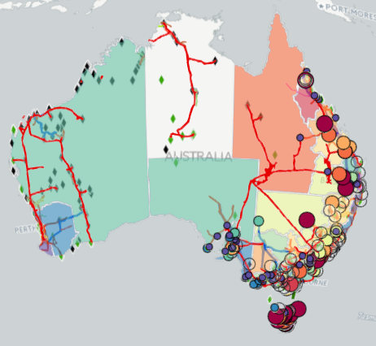
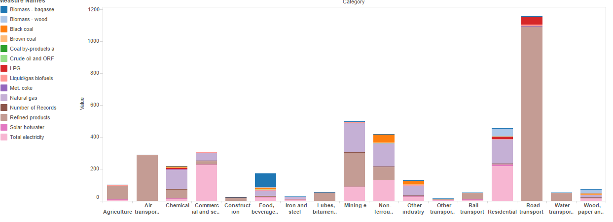
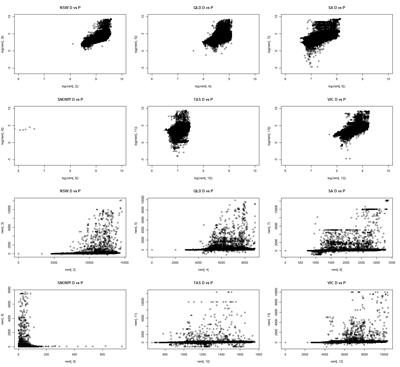
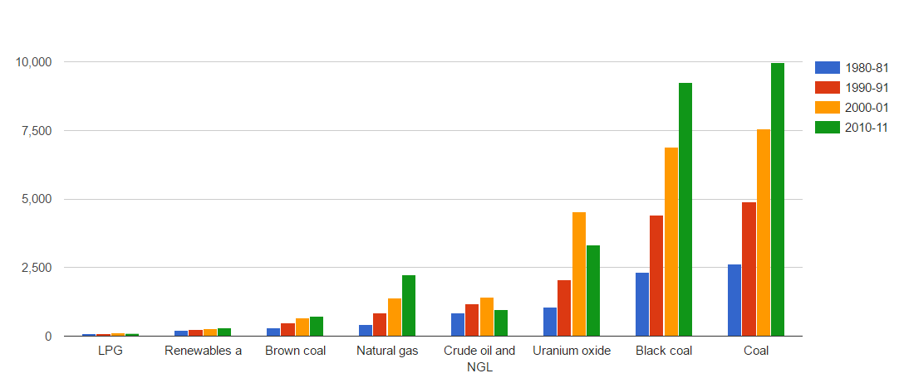

Energy
Correl8 has depicted four sets of energy data which combines the data from Department of Industry and Science with Australian Bureau of Statistics and private sector data.
   
Ensure you enable scripting in your browser.
- The first visualisation shows the National Map depicting the electricity transmission grid in Australia which is heavily dominated by generators on the eastern seaboard.
- The graph next to it shows the energy production in Australia over the last four decades from various fuel types. This graph shows that energy production from most fuel types have increased over the years, except from Nuclear (Uranium) and Crude oil. Energy production from coal has dominated the fuel mix in Australia for every decade.
- The bottom graph shows the energy consumption in Australia from the various industry sectors during the 2013-14 financial year. Road transport dominates this category with over 90% of the energy consumed from refined fuel sources..
- The multi graph tab shows that unique nature of electricity pricing in the different states in Australia.